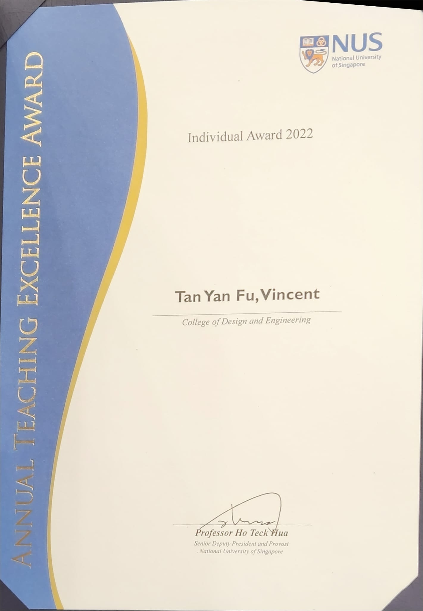

Vincent Y. F. Tan 陈延福 (Pronouns: he/him/his/他)

|
Associate Professor,
Affiliate,
On Sabbatical at IORA in AY 2022/23 Office: E4-06-06 (ECE) and S17-05-20 (Mathematics)
My Curriculum Vitae. |
News (Archive)
- Event: Organizing the Information Theory and Data Science workshop at the Institute of Mathematical Sciences with Po-Ling Loh and Jonathan Scarlett. This workshop will be held in January 2023.
- Advertisement: Looking to hire motivated postdocs. Please see this advertisement for more details.
- Oct 2022: Posted a paper on the effect of pseudo-labeling on the generalization error of the semi-supervised Gibbs algorithm. Joint work with Haiyun He, Gholamali Aminian, Yuheng Bu and Miguel Rodriges. We show that the generalization performance of SSL with pseudo-labeling is affected not only by the information between the output hypothesis and input training data but also by the information shared between the labeled and pseudo-labeled data samples.
- Oct 2022: Posted a paper on Federated Best Arm Identification with Heterogeneous Clients. Joint work with PhD. student Zhirui Chen and postdoc P. N. Karthik. In this paper, we show, among other results, that for any algorithm whose upper bound on the expected time to find the best arms matches with the lower bound up to a multiplicative constant, the ratio of any two consecutive communication time instants must be bounded.
- Oct 2022: Paper on Fast Beam Alignment using Pure-Exploration in Multi-Armed Bandits accepted to the IEEE Transactions on Wireless Communications. Joint work with former CSC scholar Yi Wei and Ph.D. student/postdoc Zixin Zhong. In this paper, we develop a two-phase heteroskedastic track-and-stop algorithm to tackle the beam alignment problem.
- Oct 2022: Selected as a "Top Reviewer" for NeurIPS 2022.
- Oct 2022: Posted a paper on Understanding and Mitigating Dimensional Collapse in Heterogeneous Federated Learning. Joint work with Ph.D. student Yujun Shi and other co-authors. In this paper, we address the data heterogeneity problem in federated learning by mitigate dimensional collapse.
-
Sep 2022: Received the NUS Annual Teaching Excellence Award (ATEA).

- Sep 2022: Posted a paper on Relational Reasoning via Set Transformers with applications to multi-agent RL (MARL) which has been accepted to NeurIPS 2022. Joint work with Ph.D. student Fengzhuo Zhang and co-authors. In this paper, we present theoretical results justifying the use of transformers in cooperative MARL. We show that, with this choice of architecture, sub-optimality gaps grow independently of the number of agents.
- Sep 2022: Three papers accepted to NeurIPS 2022! One paper with Junwen Yang on Best Arm Identification in Linear Bandits, one paper with Du Jiawei (and co-authors) on Sharpness-Aware Training, and the last with Fengzhuo Zhang (and co-authors) on Relational Reasoning via Set Transformers with applications to MARL. See CS Conference Papers for details.
- Sep 2022: Paper on Exact Recovery in the General Hypergraph Stochastic Block Model accepted to the IEEE Transactions on Information Theory. This is joint work with former postdoc Qiaosheng Zhang. In this paper, we characterize the fundamental limits for recovering k hidden communities based on an observed hypergraph. The phase transition is represented in terms of a quantity which we term as the generalized Chernoff--Hellinger divergence between communities. Our algorithm consists of a spectral clustering step and successive local refinement steps.
- Aug 2022: Paper on Information-Theoretic Characterization of the Generalization Error for Iterative Semi-Supervised Learning accepted to the Journal of Machine Learning Research! This is joint work with Ph.D. students Haiyun He and Hanshu Yan. In this paper, we characterize the generalization error of iterative semi-supervised learning (SSL) algorithms that iteratively generate pseudo-labels for the unlabelled samples. Our theoretical results suggest that when the class conditional variances are not too large, the gen-error decreases with the number of iterations t, but quickly saturates. On the other hand, when the class conditional variances are large, the gen-error increases with t.
- Aug 2022: Lectures for EE2012A Analytical Methods for ECE posted on Youtube. Thanks to EE2012A student Valencia Chong for helping with this.
- Aug 2022: Posted a preprint "Almost Cost-Free Communication in Federated Best Arm Identification". Joint work with Srinivas Kota Reddy and P. N. Karthik. In this paper, we study the problem of best arm identification in a federated learning multi-armed bandit setup with a central server and multiple clients and elucidate the tradeoff between communication cost and number of arm selections.
- Aug 2022: Congrats to my student Hanshu Yan for the successful defense of his Ph.D. thesis titled "Towards Adversarial Robustness for Deep Vision Systems".
- Aug 2022: Congrats to my student Haiyun He for the successful defense of her Ph.D. thesis titled "Fundamental Performance Limits of Statistical Problems: From Detection Theory to Semi-Supervised Learning".
- Aug 2022: Three papers accepted to the IEEE Information Theory Workshop (ITW) in Mumbai, India. See Conference Papers for details.
- Jul 2022: Invited to be an Area Chair of the 2023 International Conference on Learning Representations (ICLR)
- Jul 2022: Gave a tutorial with Zixin Zhong on pure exploration in multi-armed bandits at IJCAI-ECAI 2022. [Slides]
- Jul 2022: Gave a talk on variance-constrained best arm identification at the S3 Optimization Day at IORA. [Slides] [Video (My talk starts at 1:43)]
- Jun 2022: Posted a preprint on establishing the asymptotic Nash equilibrium for the M-ary sequential adversarial hypothesis testing game. Joint work with PhD student Jiachun Pan and postdoc Yonglong Li.
{kind=link}
Research Interests and Open Positions
Information Theory
Machine Learning
Statistical Signal Processing
I am actively recruiting graduate students in the areas of my research interest above. There are various channels to be admitted to NUS including to the Faculty of Engineering, the Faculty of Science, the Institute of Operations Research and Analytics, the Institute of Data Science, or the Asian Institute of Digital Finance.
There are also multiple positions for talented postdoctoral scholars. Postdoctoral scholars with strong publication records and showing interest in the above research topics are also encouraged to contact me to check with me if there are available positions. Please see this advertisement as well as this.
Selected Recent Publications
Relational Reasoning via Set Transformers: Provable Efficiency and Applications to MARL
Fengzhuo Zhang, Boyi Liu, Kaixin Wang, Vincent Y. F. Tan, Zhuoran Yang, and Zhaoran Wang
Proc. of the 36th Annual Conference on Neural Information Processing Systems (NeurIPS), New Orleans, USA, Dec 2022Minimax Optimal Fixed-Budget Best Arm Identification in Linear Bandits
Junwen Yang and Vincent Y. F. Tan
Proc. of the 36th Annual Conference on Neural Information Processing Systems (NeurIPS), New Orleans, USA, Dec 2022Sharpness-Aware Training for Free
Jiawei Du, Daquan Zhou, Jiashi Feng, Vincent Y. F. Tan, and Joey Tianyi Zhou
Proc. of the 36th Annual Conference on Neural Information Processing Systems (NeurIPS), New Orleans, USA, Dec 2022Exact Recovery in the General Hypergraph Stochastic Block Model
Qiaosheng (Eric) Zhang and Vincent Y. F. Tan
IEEE Transactions on Information Theory, 2022+Information-Theoretic Characterization of the Generalization Error for Iterative Semi-Supervised Learning
Haiyun He, Hanshu Yan, and Vincent Y. F. Tan
Journal of Machine Learning Research, Vol. 23, No. 287, Pages 1 - 52, 2022
Oldies But Goldies
Information Spectrum Approach to Strong Converse Theorems for Degraded Wiretap Channels
Vincent Y. F. Tan and Matthieu R. Bloch
IEEE Transactions on Information Forensics and Security, Vol. 10, No. 9, Pages 1891 - 1904, Sep 2015Asymptotic Estimates in Information Theory with Non-Vanishing Error Probabilities
Vincent Y. F. Tan
Foundations and Trends® in Communications and Information Theory, Vol. 11, Nos. 1-2, Pages 1 – 184, 2014Automatic Relevance Determination in Nonnegative Matrix Factorization with the β-Divergence [Slides] [Code]
Vincent Y. F. Tan and Cédric Févotte
IEEE Transactions on Pattern Analysis and Machine Intelligence, Vol. 35, No. 7, Pages 1592 - 1605, Jul 2013A Large-Deviation Analysis of the Maximum-Likelihood Learning of Markov Tree Structures [Slides]
Vincent Y. F. Tan, Animashree Anandkumar, Lang Tong and Alan S. Willsky
IEEE Transactions on Information Theory, Vol. 57, No. 3, Pages 1714 - 1735, Mar 2011Estimating Signals with Finite Rate of Innovation from Noisy Samples: A Stochastic Algorithm [Code]
Vincent Y. F. Tan and Vivek K Goyal
IEEE Transactions on Signal Processing, Vol. 56, Issue 10, No. 5135 - 5145, Oct 2008